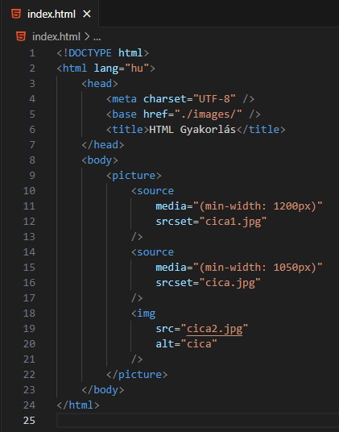

Mit lehet tudni a következő HTML elemekről: map, area?
A képtérképhez (image map) három dologra van
szükségünk.
Egy képre, amelyen elhelyezzük a kattintható
területeket, vagyis a képtérképet. A
képtérképpel a usemap-attribútummal lesz
összekötve.
Kattintható területekre. Ehhez az area-elemet
fogjuk használni. Lehetséges értékek a
shape-attribútumra: rect (téglalap), circle
(kör) és poly (poligon). A
coords-attributum a rect esetén: (bal felső x,
bal felső y, jobb alsó x, jobb alsó y). A
coords-attributum a rect esetén: (középpont x,
középpont y, sugár).
A href-attribútum tetszőleges URL lehet.
És magára a képtérképre. Ehhez a map-elemre lesz
szükségünk. A képpel a name-attribútummal fogjuk
összekötni. (name="cica" => usemap="#cica" -
figyeljünk a #-jelre!)
Mit lehet tudni a következő HTML elemekről: picture, source?

A picture HTML-elem arra jó, hogy adott keretbe
más-más képet helyezzünk el más-más képernyő
méret vagy eszköz esetén.
A fenti példánál látható, hogy két törési pont
van: 1200px és 1050 px. Ezt a media-attribútum
szabályozza.
Mindig a nagyobb érték legyen felül.
A képeket a source HTML-elemben az
srcset-attribútummal adjuk meg.
MINDIG KELL EGY IMG ELEM, AMI A PICTURE ELEM
UTOLSÓ ELEME! Ezt használja az a böngésző, amely
nem támogatja a picture-elemet, vagy ha a
source-okban megadott képek sem jók valamiért
(például nem jó a kép formátuma).
A képtérképhez (image map) három dologra van
szükségünk.
Egy képre, amelyen elhelyezzük a kattintható
területeket, vagyis a képtérképet. A
képtérképpel a usemap-attribútummal lesz
összekötve.
Kattintható területekre. Ehhez az area-elemet
fogjuk használni. Lehetséges értékek a
shape-attribútumra: rect (téglalap), circle
(kör) és poly (poligon). A
coords-attributum a rect esetén: (bal felső x,
bal felső y, jobb alsó x, jobb alsó y). A
coords-attributum a rect esetén: (középpont x,
középpont y, sugár).
A href-attribútum tetszőleges URL lehet.
És magára a képtérképre. Ehhez a map-elemre lesz
szükségünk. A képpel a name-attribútummal fogjuk
összekötni. (name="cica" => usemap="#cica" -
figyeljünk a #-jelre!)